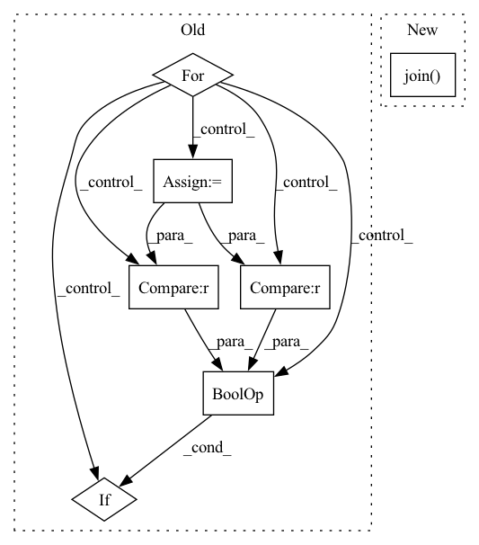

Pattern ID :17465
Before Change
subwrds = []
logger.info("generating subwrd lists...")
for i, line in enumerate(tqdm(lines)):
ids = tokenizer.sp.encode_as_ids(line)
// filter out sentence that is too short or to long
if len(ids) > 0 and len(ids) < 400 :
subwrds.append(ids)
if ".pkl" in hdf5_file:After Change
if add_txt is not None:
all_wrds = add_txt
chars_lst = [c for c in "_".join( all_wrds) ]
all_chars = " ".join(chars_lst)
with gzip.open(data_path, "rt") as f_in:In pattern: SUPERPATTERN
Frequency: 3
Non-data size: 7
Instances Fragment ID: 57925171
Project Name: speechbrain/speechbrain
Commit Name: 057bf8612902186a15a1b491180d503ff1872c49
Time: 2020-10-28
Author: jzhong9@u.rochester.edu
File Name: recipes/LibriSpeech/librispeech_lm_prepare.py
M Class Name: AnonimousClass
N Class Name: AnonimousClass
M Method Name: create_hdf5(5)
N Method Name: create_hdf5(5)
M Parent Class:
N Parent Class:
M File Name: recipes/LibriSpeech/librispeech_lm_prepare.py
N File Name: recipes/LibriSpeech/librispeech_lm_prepare.py
M Start Line: 135
M End Line: 195
N Start Line: 150
N End Line: 186
Before Change
os.makedirs(image_dir)
file_names = os.listdir(args.inputs_dir)
for file_name in tqdm(file_names, total=len(file_names)):
// Use PIL to read high-resolution image
image = Image.open(f"{args.inputs_dir}/{file_name}").convert("RGB")
if image.width >= args.image_size and image.height >= args.image_size :
index = 1
for pos_x in range(0, image.width - args.image_size + 1, args.step):
for pos_y in range(0, image.height - args.image_size + 1, args.step):After Change
for image_file_name in image_file_names:
workers_pool.apply_async(worker, args=(image_file_name, args), callback=lambda arg: progress_bar.update(1))
workers_pool.close()
workers_pool.join()
progress_bar.close()
def worker(image_file_name, args) -> None: Fragment ID: 57925169
Project Name: lornatang/srgan-pytorch
Commit Name: 1d6be4b16a40a639450395e57e387a892f712cf5
Time: 2022-01-11
Author: liuchangyu1111@gmail.com
File Name: scripts/prepare_dataset.py
M Class Name: AnonimousClass
N Class Name: AnonimousClass
M Method Name: main(1)
N Method Name: main(0)
M Parent Class:
N Parent Class:
M File Name: scripts/prepare_dataset.py
N File Name: scripts/prepare_dataset.py
M Start Line: 23
M End Line: 42
N Start Line: 23
N End Line: 38
Before Change
os.makedirs(image_dir)
file_names = os.listdir(args.inputs_dir)
for file_name in tqdm(file_names, total=len(file_names)):
// Use PIL to read high-resolution image
image = Image.open(f"{args.inputs_dir}/{file_name}").convert("RGB")
if image.width >= args.image_size and image.height >= args.image_size :
for i in range(10):
new_image = RandomCrop([args.image_size, args.image_size])(image)
new_image.save(f"{image_dir}/{file_name.split(".")[-2]}_{i:03d}.{file_name.split(".")[-1]}")After Change
for image_file_name in image_file_names:
workers_pool.apply_async(worker, args=(image_file_name, args), callback=lambda arg: progress_bar.update(1))
workers_pool.close()
workers_pool.join()
progress_bar.close()
def worker(image_file_name, args) -> None: Fragment ID: 57925159
Project Name: lornatang/esrgan-pytorch
Commit Name: 904a78487b8c542178fdd96863f47cf20ff63fc8
Time: 2022-02-07
Author: liuchangyu1111@gmail.com
File Name: scripts/prepare_dataset.py
M Class Name: AnonimousClass
N Class Name: AnonimousClass
M Method Name: main(1)
N Method Name: main(0)
M Parent Class:
N Parent Class:
M File Name: scripts/prepare_dataset.py
N File Name: scripts/prepare_dataset.py
M Start Line: 24
M End Line: 39
N Start Line: 23
N End Line: 38
Before Change
subwrds = []
logger.info("generating subwrd lists...")
for i, line in enumerate(tqdm(lines)):
ids = tokenizer.sp.encode_as_ids(line)
// filter out sentence that is too short or to long
if len(ids) > 0 and len(ids) < 400 :
subwrds.append(ids)
if ".pkl" in hdf5_file:After Change
if add_txt is not None:
all_wrds = add_txt
chars_lst = [c for c in "_".join(all_wrds)]
all_chars = " ".join( chars_lst)
with gzip.open(data_path, "rt") as f_in:
for snt_id, line in enumerate(f_in):
wrds = line.strip() Fragment ID: 57925160
Project Name: speechbrain/speechbrain
Commit Name: 057bf8612902186a15a1b491180d503ff1872c49
Time: 2020-10-28
Author: jzhong9@u.rochester.edu
File Name: recipes/LibriSpeech/librispeech_lm_prepare.py
M Class Name: AnonimousClass
N Class Name: AnonimousClass
M Method Name: create_hdf5(5)
N Method Name: create_hdf5(5)
M Parent Class:
N Parent Class:
M File Name: recipes/LibriSpeech/librispeech_lm_prepare.py
N File Name: recipes/LibriSpeech/librispeech_lm_prepare.py
M Start Line: 135
M End Line: 195
N Start Line: 150
N End Line: 186